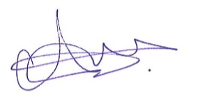

Abdi Abdirashid

Stallikerstrasse 5a
8906 Bonstetten
Motivation Letter
Dear Sir or Madam,
Allow me to briefly introduce myself: My name is Abdi Abdirashid, and I was born in a small town in southern Somalia called El Bur. Due to the conflicts in my home country, my family frequently relocated, requiring me to adapt to new school systems and environments. These experiences equipped me with valuable cultural knowledge and a high level of adaptability. Over the years, I lived in several African countries, including Kenya, Tanzania, and Ethiopia, which further shaped my ability to adjust quickly to new circumstances. At the age of 15, I moved to Switzerland after my uncle in the United Kingdom could no longer financially support our family. Settling into life in Switzerland was smooth for me, as I quickly focused on learning the language—one of my key strengths.
I am a trained maintenance worker and successfully completed my apprenticeship at the Kirchbühl School in the municipality of Cham, Zug. During my training, I performed a variety of tasks, such as vacuuming and mopping classrooms, conducting daily routine inspections, and cleaning staircases. I particularly enjoyed deep cleaning tasks, which required precision and efficiency. Additionally, I have worked in various roles, including as a janitor, cleaner, production worker at V-ZUG, construction helper, car transporter, and carpenter. These temporary assignments through staffing agencies have provided me with valuable experience and enhanced my adaptability and versatility.
I consider my greatest strengths to be my reliability, my precise and focused approach to work, and my ability to quickly learn new skills. I am a flexible and open-minded individual who enjoys taking on responsibility and working effectively both independently and as part of a team. I particularly value a positive work environment where collaboration and mutual support are prioritized.
After reuniting with my family in 2023 during a memorable journey, I am now ready to commit to a long-term and permanent position. I am passionate about the field of operational maintenance and eager to contribute my accumulated experience and skills to your organization.
I look forward to the opportunity to share more about myself and my qualifications in a personal interview. I would also be happy to demonstrate my abilities during a trial day. Thank you for considering my application.
Kind regards,

Abdi Abdirashid